Your LLM's decisions,
compiled to microseconds.
shad0w watches the answers your model already gives, compiles them into a 2 MB table, and certifies how often that table will disagree. It then serves the answers it can certify on your CPU in microseconds and hands the rest back to your model.

Millions of tiny decisions,
each one a round trip to a GPU.
Which intent is this? Which queue gets this ticket? Is this a scam? Should this agent step run? You already ask a big model, and every answer costs 20–1,500 ms.
Latency you can't put in a hot path
A 150 ms decision cannot sit inside a payments path, a message filter that sees billions of events, or an agent loop that makes dozens of decisions per task.
Someone else's model, someone else's mood
The decision lives on a vendor's GPU. It changes when they change it, and identical inputs can get different answers.
No evidence for the cheaper path
When someone proposes a faster path, nobody can say how often it disagrees with the model that was approved. Reviewers and auditors ask exactly that.
Learn from your model. Prove it. Serve it.
Four steps, one line of code, and your model stays in charge of everything the table can't certify.

Shadow
Wrap the call you already make. Your model keeps answering, and every answer is logged as
(text, answer).Compile
The log trains a hashed n-gram table with int8 weights. There is no tokenizer and no GPU, and it takes minutes on a laptop.
Certify
On held-out answers, Learn-then-Test picks the confidence threshold at which disagreement with your model is provably ≤ α.
Serve
Certified answers come back in microseconds, in-process. The rest go to your model and are logged, so offload grows with traffic.
import shad0w # day 1: no bundle yet; your model answers, calls are logged sh = shad0w.Shadow(None, teacher=ask_my_llm, question="intent", log="teacher_log.jsonl") # after `shad0w shadow`: the table answers what it can certify sh = shad0w.Shadow("bundle/", teacher=ask_my_llm, log="teacher_log.jsonl") d = sh.decide("my card was stolen yesterday") d.answer, d.source, d.latency_us # ('lost_card', 'table', 14.2)
# compile + certify from your model's logged answers shad0w shadow --schema schema.json --data teacher_log.jsonl \ --teacher my-llm-v3 --alpha 0.05 --out bundle/ compiled and certified ['intent'] -> bundle/ intent: agreement with teacher 85.3%; certified share 71.2% at alpha=0.05 shad0w report --bundle bundle/ # the certificate shad0w certify --bundle bundle/ --data week42.jsonl # re-certify on fresh traffic
import { Bundle } from "shad0w"; // npm i shad0w · zero dependencies const bundle = await Bundle.load("bundle/"); // Node, browser, Workers const a = bundle.decide(text).answers.intent; const intent = a.certified ? a.choice : await askMyLLM(text);
shad0w serve --bundle bundle/ --port 8010 curl localhost:8010/v1/decide -d '{"state": "my card was stolen"}' {"answers": {"intent": {"choice": "lost_card", "confidence": 0.97, "certified": true, "flag": null, "radius": 6}}, "latency_us": 21.4}
The numbers, with their receipts.
Public datasets, three seeds, and a raw result file behind every number. See all benchmarks →



Cascade accuracy (table + your model) stayed within 1 point of the model alone on every task. With Kev-0.8B as the teacher, mean latency fell from 75 ms to 22 ms.
What you'd otherwise do.
Caches and routers make it faster. Small classifiers make it local. shad0w is local and tells you how often it disagrees.
| Per decision | Runs on | Needs | Bound on what it serves | |
|---|---|---|---|---|
| Keep calling the LLM / decision API | 20–1,500 ms | GPU or vendor API | — | it is the reference |
| Semantic cache | ms | embedding model + vector store | nothing | similarity threshold |
| Embedding router | ms | embedding model | example utterances | threshold |
| Distil into a smaller LLM | 10–100 ms | GPU | teacher outputs | none |
| fastText / SetFit / Model2Vec | µs–ms | CPU | human labels | none |
| shad0w | 1–15 µs | CPU, in-process, browser, edge | your model's logged answers | finite-sample, vs your model |
Not new science: the certificate is Learn-then-Test, and the table is fastText-shaped on purpose. The new part is the packaging: one workflow from shadow logs to a certified KB-to-MB artifact, with identical decisions in C, Python and JavaScript.
See it explain itself.
Decisions where the words carry the answer.
Intent & routing
Support and banking intents, ticket queues, email triage, with 20–150 options. This is where shad0w is strongest: 45–71% served locally.
Screening & guards
Spam, scam and prompt-injection screens, and allow / block / escalate gates on agent steps, run before the expensive call.
Edge, browser, offline
A 2 MB table and a zero-dependency JS runtime: decide on the device, in a Worker, or with no network at all.
When not to use it.
These are measured. They are what make the certificate worth trusting.
shad0w certify exist for when it moves.Put a shadow in front of your model.
Start logging today. Compile when you have a thousand answers. Serve what you can prove.